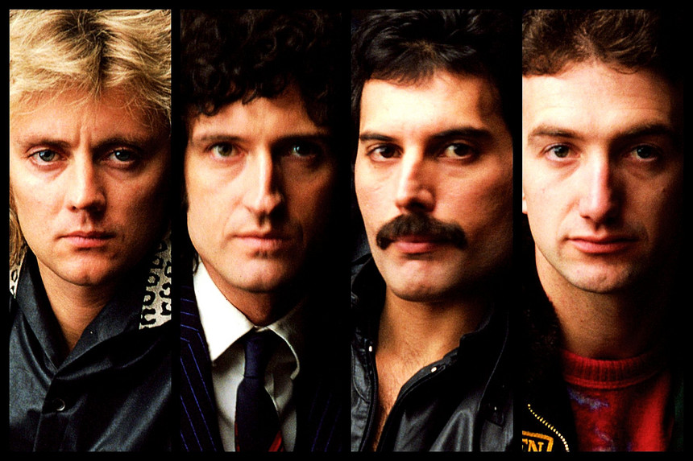

Principais premios recebidos pelo Queen

- Grammy Hall of Fame Award
2009, 2004 · We Will Rock You, Bohemian Rhapsody
- Brit Award: Melhor Single Britânico
1992, 1977 · These are the Days of Our Lives, Bohemian Rhapsody
-
Juno Award: Melhor Álbum Internacional
1980 · The Game
-
MTV Video Music Award: Melhor Clipe de um Filme
1992 · Bohemian Rhapsody
-
Juno Award: Melhor Canção
1980 · Another One Bites the Dust
-
Prêmio Echo de Melhor Grupo Internacional
1992
-
American Music Award de Melhor Trilha Sonora
2019 · Bohemian Rhapsody: The Original Soundtrack
-
American Music Award de Single de Pop/Rock Favorito
1981 · Another One Bites the Dust
-
Brit Award: Contribuição à Música
1990
-
Prêmio Porin de Melhor DVD Internacional
2012 · Queen: Days of Our Lives
-
MTV Europe Music Award para Icone Global
2011